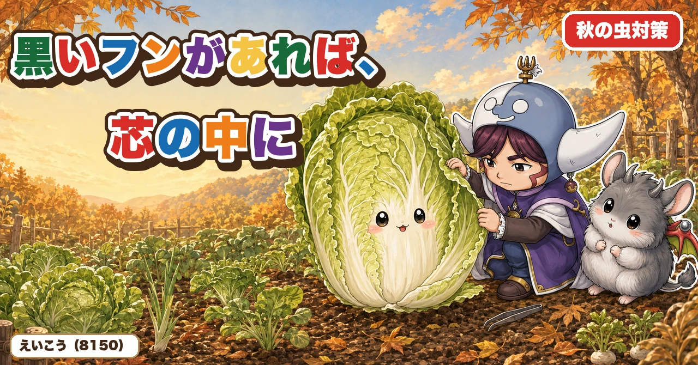
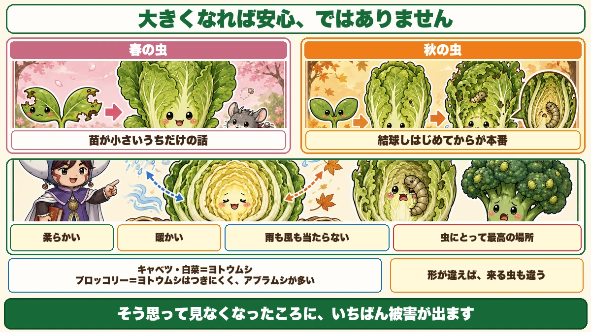
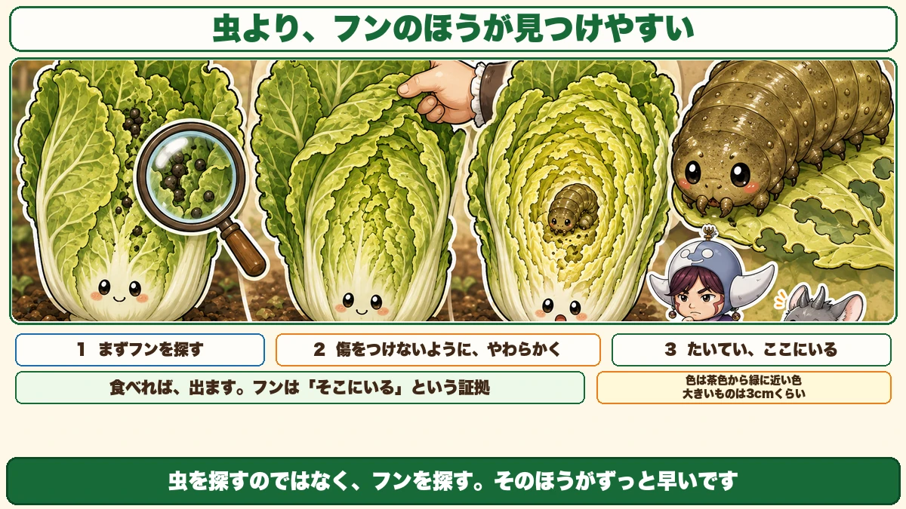
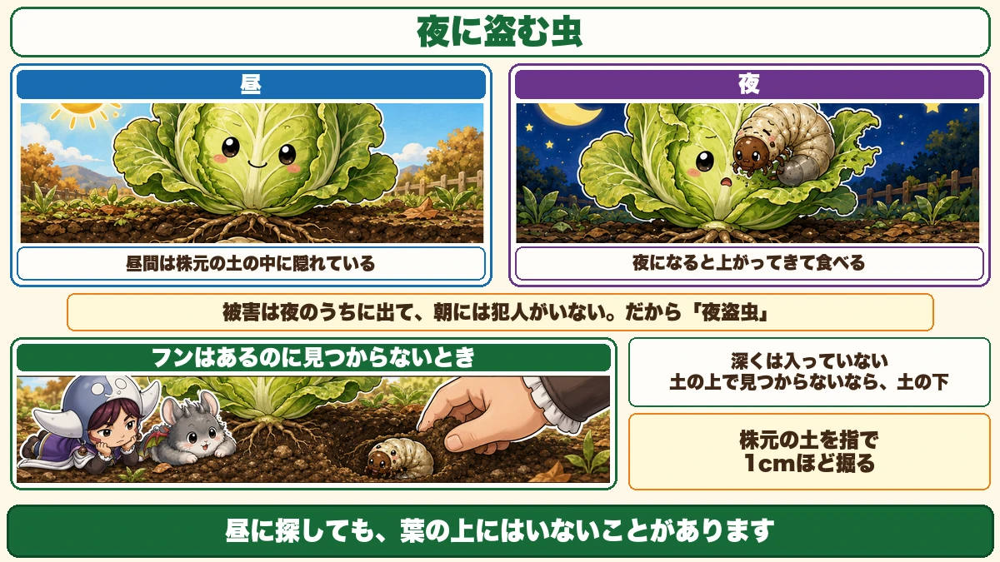
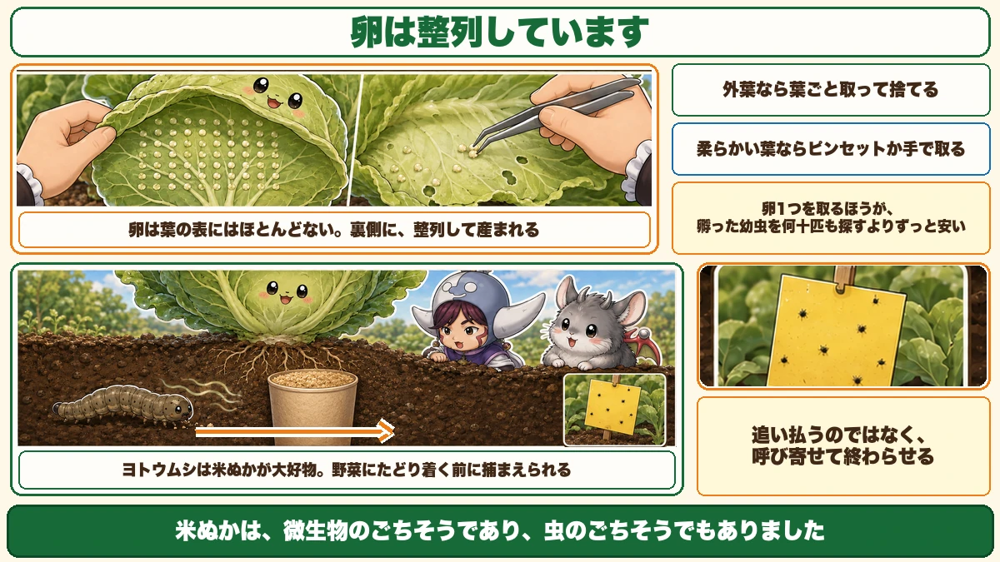

黒いフンがあれば、芯の中にいます🐛 巻きはじめてからが本番です

🐛「ここまで大きくなれば、もう安心だろう」
🐛「葉に黒い粒が落ちている」
🐛「探しても、虫が見つからない」
どうも、8150（えいこう）です🌱 家庭菜園歴8年、理科の教員免許を持っていて、有機・無農薬で野菜を育てています。
前に、春の虫の話をしました。★「苗が小さいうちだけの話です」とお伝えしました。
★秋は、逆です。
先に、この記事でいちばん言いたいことを言っておきます。
★キャベツや白菜は、巻きはじめてからが本番です。
そして★葉と葉のあいだに黒いフンがあれば、犯人は芯の中にいます☺️

★★大きくなれば安心、ではありません
春の話を、思い出してください
春の虫の記事で、こうお伝えしました。
★葉が4枚の苗が2枚食われたら、光合成の能力が半分になる。でも株が大きくなれば、多少食べられても平気。
★あれは本当です。夏野菜については、そのとおりです。
★秋は、そうなりません
でも、秋冬野菜は違います。
★キャベツや白菜は、結球しはじめてからがいちばん多く発生します。
「ここまで育ったから、もう大丈夫だろう」
★そう思って見なくなったころに、いちばん被害が出ます。
なぜ、そうなるのか
理由を考えると、納得できます。
★結球するということは、芯の部分に柔らかい葉が集まってくるということです。
外葉は硬くて、風にも当たっています。★でも芯の中は、柔らかくて、暖かくて、雨も風も当たりません。
★虫にとっては、これ以上ない場所です。
★野菜で、相手が違います
同じアブラナ科でも、つく虫が違います。
★キャベツ・白菜 … ヨトウムシが多い
★ブロッコリー … ★ヨトウムシはつきにくい。代わりに★アブラムシがいっぱいつく
★ブロッコリーは結球しないので、隠れる場所がないんですね。★形が違えば、来る虫も違います。
★★フンを見つけてください
虫より、フンのほうが見つけやすい
ヨトウムシを探すのは、正直むずかしいです。★色が葉と似ていて、隠れています。
でも、簡単な方法があります。
★葉と葉のあいだに、黒い粒が落ちていないか見てください。

★★フンがあれば、芯の中にいます
これはほぼ確実です。
★葉と葉のあいだにフンがあれば、成長点の芯の中にいると思って間違いありません。
食べれば、出ます。★フンは「そこにいる」という証拠です。
★虫を探すのではなく、フンを探す。そのほうがずっと早いです。
探し方
フンを見つけたら、そこから追います。
★1. 葉を1枚1枚、めくっていく
★傷をつけないように、やわらかくめくってください。力を入れると、外葉が折れます。
★2. 芯の柔らかい葉まで、奥深くまで見る
途中でやめないでください。★奥にいます。
★3. 芯の真ん中を見る
★たいてい、ここにいます。★柔らかい葉をかじっているので、すぐ分かります。
見た目
見つけるときの目安です。
- ★色は、茶色から緑に近い色
- ★大きいものは3cmくらい
★けっこう大きいです。見つければ、はっきり分かります。
★★昼と夜で、いる場所が違います
名前のとおりです
ヨトウムシは、漢字で「夜盗虫」と書きます。
★夜に盗む虫、という名前です。

★昼間は、土の中にいます
★昼間は、株元の土の中に隠れています。
だから昼に探しても、葉の上にはいないことがあります。
★夜になると、上がってきて食べます。
★被害は夜のうちに出て、朝になると犯人はいない。だから「盗む」なんですね。
★★フンはあるのに、見つからないとき
これがよくあります。
★フンは落ちている。でも葉をめくっても、虫がいない。
そのときは、こうしてください。
★株元の土を、1cmくらい掘ってみてください。
★深くは入っていません。★昼間は必ず土の中にいます。
前に春の虫の記事で、ネキリムシは「株元の浅いところに丸まっている」とお伝えしました。★同じです。
★土の上で見つからないなら、土の下です。
★★卵は、整列しています
一目で分かります
もうひとつ、見るべきものがあります。★卵です。
★卵は、葉の表にはほとんどありません。裏側にあります。
そして特徴があります。
★★整列して、きれいに並べたように産まれています。

★これは一目瞭然です。見れば「あ、これだ」と分かります。
見つけたら
対処は簡単です。
★外葉なら … ★葉ごと取って捨てます
1枚くらい取っても影響ありません。★卵を残すほうが損です。
★柔らかい葉なら … ★ピンセットか手で取ります
葉を残したい場合は、卵だけをこそげ取ります。
★孵る前に取るのが、いちばん安い
★卵1つを取るのと、孵った幼虫を何十匹も探すのと、どちらが楽でしょうか。
前にアブラムシのところで、「★数匹のうちに叩く」とお伝えしました。★卵はその手前です。
★葉の裏を見る習慣が、いちばん効きます。
フンの処理
見つけたら、取り除く
虫を取ったあと、フンが残ります。
★これも取ってください。
理由は正直に言うと、★そのまま食べる気になれないからです。収穫のときに、葉のあいだにフンが点在していると気持ちが落ちます。
やり方
- ★ピンセットでつまんで捨てる
- ★じょうろの水で洗い流す
どちらでも構いません。★見つけたときに、ついでにやっておく。それだけです。
★★米ぬかトラップ
裏技があります
最後に、面白い方法をお伝えします。
★紙コップに米ぬかを満杯に入れて、株元に埋める。
やり方
- ★紙コップや、少し大きめの容器を用意する
- ★米ぬかを、満杯に入れる
- ★白菜の株元に穴を掘って、コップを埋め込む
★容器の口が、地面と同じ高さになるようにします。
★★ヨトウムシは、米ぬかが大好物です
なぜこれが効くのか。
★ヨトウムシは、米ぬかが大好物なんだそうです。
★匂いと味に引き寄せられて、そちらへ行きます。
つまり、★野菜にたどり着く前に、そこで捕まえられます。
★米ぬかは、みんなのごちそうです
面白いと思ったのは、ここです。
前に寒起こしの記事で、こうお伝えしました。
★米ぬかは、土の中の微生物のごちそう。
★虫にとっても、ごちそうでした。
★同じものが、味方にも敵にも効く。それなら、こちらの都合のいい場所に置いてやればいい。★それがトラップという発想です。
前に紹介した道具と、同じ考え方
前にウリハムシのところで、★黄色い粘着シートの話をしました。
★あれも「虫の好きなものを、こちらの決めた場所に置く」という方法です。
★追い払うのではなく、呼び寄せて、そこで終わらせる。★無農薬で使える、数少ない攻めの手だと思います。
見る回数が、すべてです
この記事の要点
- ★★春の虫は苗が小さいうちだけ。★秋は逆で、結球しはじめてからが本番
- ★芯の中は、柔らかく、暖かく、雨も風も当たらない。★虫にとって最高の場所
- ★キャベツ・白菜はヨトウムシ。★ブロッコリーはヨトウムシがつきにくく、アブラムシが多い
- ★形が違えば、来る虫も違う
- ★★葉と葉のあいだに黒いフンがあれば、芯の中にいる
- ★虫を探すのではなく、フンを探すほうが早い
- 探し方＝★①葉を1枚1枚やわらかくめくる ②芯の奥まで見る ③芯の真ん中
- ★色は茶色から緑に近い色。★大きいものは3cmくらい
- ★★昼間は株元の土の中、夜に上がってきて食べる
- ★フンはあるのに見つからないときは、★株元の土を1cm掘る
- ★★卵は葉の裏に、整列して並べたように産まれる。★一目瞭然
- ★外葉なら葉ごと捨てる。★柔らかい葉ならピンセットで
- ★卵1つを取るほうが、孵った幼虫を何十匹も探すよりずっと安い
- ★フンはピンセットか、じょうろの水で流す
- ★★米ぬかトラップ＝紙コップに米ぬかを満杯にして株元に埋める
- ★ヨトウムシは米ぬかが大好物。★野菜に行く前に捕まえられる
- ★米ぬかは微生物のごちそうであり、虫のごちそうでもあった
- ★追い払うのではなく、呼び寄せて終わらせる
全部やろうとしなくて大丈夫です。まずは白菜の株を1つ選んで、★葉と葉のあいだに黒い粒がないか見てください。あれば、芯の中にいます🐛
次回は、キャベツの話。白菜と同じアブラナ科なのに、育て方が違うところをお話しします🥬
ここまで読んでくださって、ありがとうございました。
防虫ネット（1mm目）
秋は結球しはじめてからが本番です。植えた直後からかけておいてください。


アーチ支柱
ネットを浮かせる骨です。葉に触れていると、その上から卵を産まれます。

マルチ押さえピン
裾が浮いていると、そこから入られます。数は多めに用意してください。

米ぬか
株元に少しまいて、翌朝そこに集まったヨトウムシを捕まえる方法があります。
![[商品価格に関しましては、リンクが作成された時点と現時点で情報が変更されている場合がございます。]](https://hbb.afl.rakuten.co.jp/hgb/565b770c.0e767ab7.565b770f.2286fabc/?me_id=1245791&item_id=10001139&pc=https%3A%2F%2Fthumbnail.image.rakuten.co.jp%2F%400_mall%2Figamai-tominaga%2Fcabinet%2Fkome%2Fimgrc0133415879.jpg%3F_ex%3D240x240&s=240x240&t=picttext "[商品価格に関しましては、リンクが作成された時点と現時点で情報が変更されている場合がございます。]")
あわせて読みたい